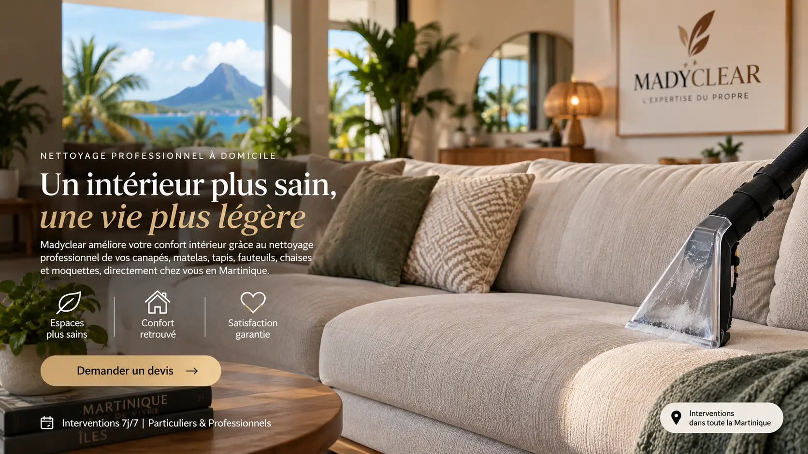

Propreté
Des textiles visiblement mieux entretenus et un intérieur qui paraît plus soigné.
MADYCLEAR améliore votre confort intérieur à travers le nettoyage professionnel de vos canapés, matelas, tapis, fauteuils, chaises et moquettes, directement à votre domicile en Martinique.

Le Textile au cœur de MADYCLEAR
Canapés, matelas, tapis, fauteuils, chaises et moquettes accompagnent chaque moment de la vie à la maison. MADYCLEAR aide à préserver leur aspect et leur fraîcheur pour rendre le quotidien plus confortable et le cadre de vie plus agréable. Notre service de nettoyage textile à domicile en Martinique s’inscrit dans cette démarche.
Usage quotidien, poussière, frottements, petites taches et odeurs finissent par s’installer. Un entretien régulier aide à préserver l’aspect du tissu et le confort de la pièce.
Choisir ce textile →Le matelas accumule naturellement poussière, transpiration et traces d’usage. Son entretien contribue à conserver une surface plus fraîche, plus nette et mieux entretenue.
Choisir ce textile →Poussière, passages répétés et petites salissures s’y concentrent rapidement. Un nettoyage adapté aide à raviver son apparence et à prolonger son entretien.
Choisir ce textile →Les accoudoirs, dossiers et assises marquent avec le temps. Un soin régulier permet de garder un fauteuil plus propre, plus agréable et plus valorisant dans l’intérieur.
Choisir ce textile →Repas, vêtements et utilisation répétée laissent progressivement des traces. L’entretien aide à conserver des assises nettes et homogènes plus longtemps.
Choisir ce textile →La poussière et les marques d’usage se répartissent sur toute la pièce. Un traitement adapté aide à retrouver un rendu plus uniforme et mieux entretenu.
Choisir ce textile →Le plaisir du confort · La joie de recevoir
Le canapé où l’on se retrouve, le matelas où l’on récupère, le tapis qui réchauffe la pièce : vos textiles participent directement au bien-être chez vous. En prendre soin, c’est rendre le quotidien plus agréable, jour après jour.
Quand vos convives s’installent, ils ressentent une atmosphère soignée, confortable et accueillante — ces détails qui mettent à l’aise et donnent simplement envie de profiter du moment.
Ce que vous recherchez vraiment
Des textiles visiblement mieux entretenus et un intérieur qui paraît plus soigné.
Des assises et surfaces textiles plus agréables à retrouver au quotidien.
Une sensation de fraîcheur qui participe à une atmosphère plus accueillante.
Un soin adapté pour préserver l’aspect et l’usage de vos textiles.
Quand les textiles sont soignés, toute la pièce gagne en harmonie et en confort.
MADYCLEAR intervient à domicile : vous décrivez le besoin, nous préparons l’intervention.
Repère tarifaire
Le montant exact est confirmé avant intervention selon les textiles concernés et les caractéristiques de la demande.
Plusieurs éléments ? Une proposition personnalisée peut être établie sur devis.
Décrivez simplement les textiles dont vous souhaitez prendre soin.
Estimer mon interventionSimple et clair
Choisissez votre textile et indiquez simplement ce que vous souhaitez faire nettoyer.
MADYCLEAR vérifie votre demande, vos photos et vous confirme le montant avant l’intervention.
Nous intervenons sur rendez-vous directement chez vous, partout en Martinique selon disponibilité.
Estimation personnalisée
En moins d’une minute, indiquez votre textile et votre besoin. MADYCLEAR enregistre votre demande, puis WhatsApp s’ouvre pour l’envoi de vos photos.
Confiance
MADYCLEAR mise sur la transparence, la discrétion et un échange simple avant toute prestation.
Le support et le besoin sont vérifiés avant intervention.
Le devis précise les éléments retenus et les conditions applicables.
L’intervention est réalisée avec soin et discrétion.
Nos engagements MADYCLEAR
Transparence, respect de votre intérieur, approche spécialisée du textile et suivi après intervention : notre charte fixe les engagements qui accompagnent chaque prestation MADYCLEAR.
Une estimation claire et des engagements réalistes avant intervention.
Une intervention soignée, professionnelle et attentive à votre espace.
Une approche centrée sur les canapés, matelas, tapis, fauteuils, chaises et moquettes.
Nous restons disponibles après notre passage pour vos questions et conseils d’entretien.
Expertises complémentaires
MADYCLEAR développe également les expertises Clim, Vitres et Auto. Elles sont proposées au cas par cas, selon le besoin et les disponibilités.